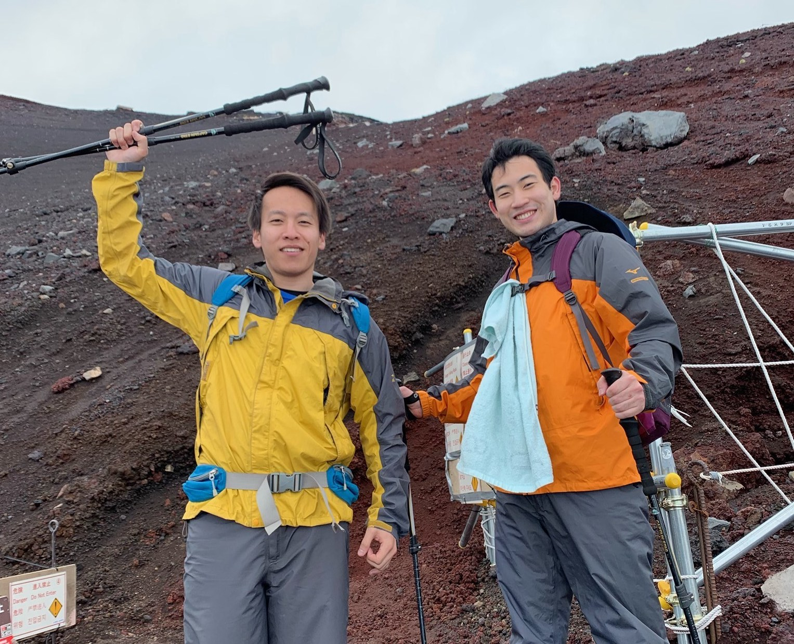
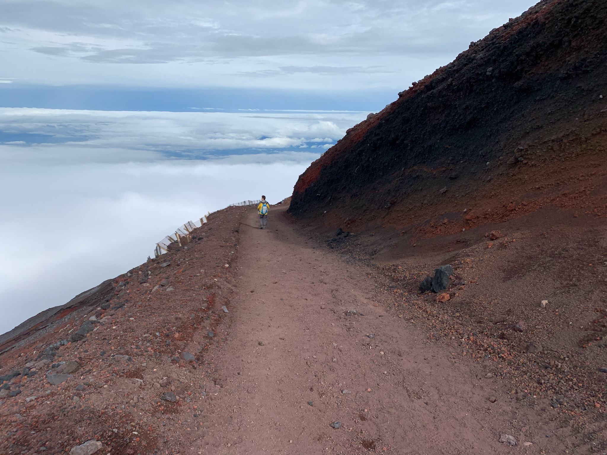
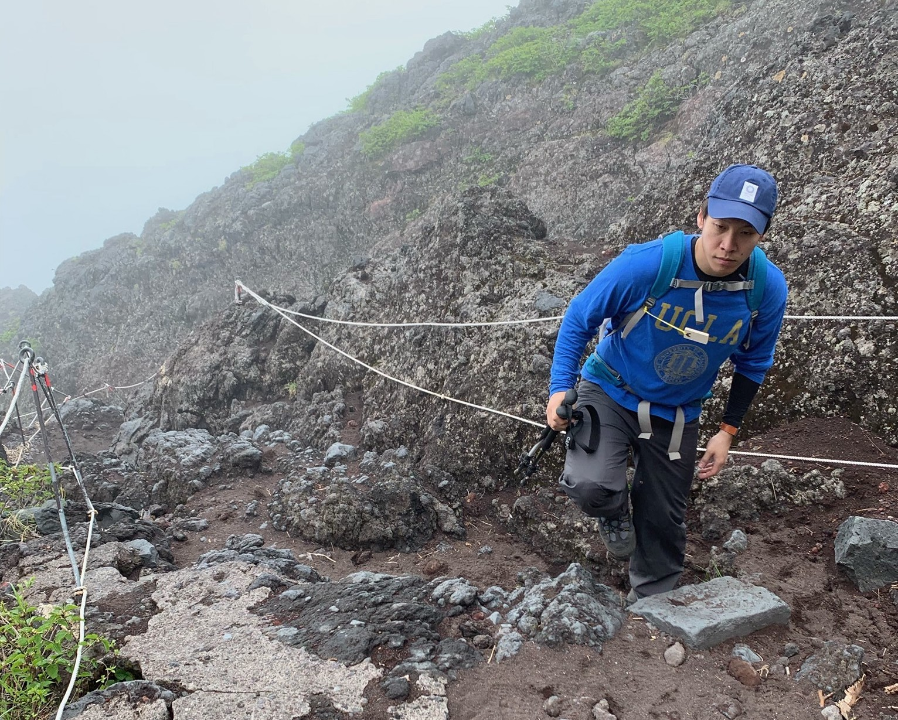

Birdwatching
My MA advisor introduced me to the world of birdwatching. Since then, I've been captivated by the beauty and fascination of birds and birding. Although I'm still a novice watcher myself, I attached some phorographs of my birding excursions in Colombia (South America).
_6.JPG)
_1.JPG)
_2.JPG)
_2.JPG)
_2.JPG)
_1.JPG)
Mountaineering
On July 5th 2019, I was finally able to climb the Mt. Fuji, the heighest mountain in Japan (3776 meters/12388.45 feet). The pictures below are some memories from the excursion.


